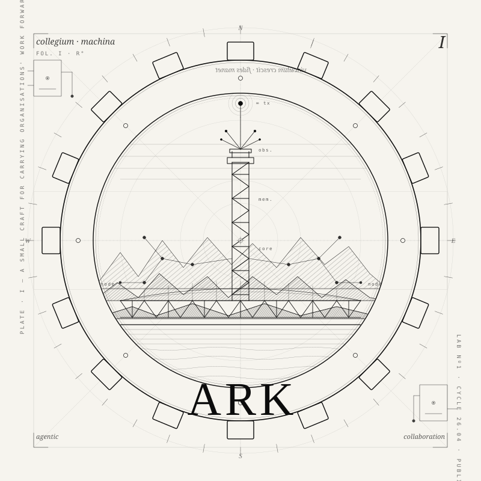

LAB
Audax · Agentic Collaboration
An open lab for agentic collaboration between organisations — shared AI agents that make a distributed community's work visible, connected, and easy to act on. First build: the ARC Community Agent.
↓ Enter the LabA lab for agentic collaboration.
Audax Lab №1 is a small working group building agentic collaboration between organisations — shared AI agents that make the public work of a distributed community visible, understandable, and connected, so that people and organisations can find each other and act on what they learn.
Memory, recall, and knowledge infrastructure are not the point of this lab — they are the tool. A shared agent that helps organisations collaborate has to remember what each one is doing, reason over it faithfully, attribute it correctly, and share it without confusing whose it is. That engineering problem — durable memory, defensible reasoning, a shared base agents can extend without stepping on each other — is where most of our research effort goes, in service of the collaboration the agent is actually for.
The work is grounded in two long-running research threads — The Coherence Company (transcript-native institutional intelligence, dreaming architectures, the Living Book) and Regentribe (decentralized knowledge infrastructure on Radicle and SurrealDB) — and in one live build, the ARC Community Agent, our first attempt to put agentic collaboration into practice.
The first build: the ARC Community Agent.
Our flagship collaboration experiment is a hackathon to build the first working version of a shared AI agent for the ARC network — a community of people who participate through organisations. The agent's job is to make those organisations' public work visible, understandable, and connected, and to help members find each other and act on what they learn.
It has two connected functions. Updates: collecting and synthesising organisational information into general community intelligence and participant-specific digests. Relationship management: onboarding and engaging participants, maintaining their relationship with the community, and — in a later phase — surfacing worthwhile conversations between aligned people and organisations, always with consent.
The hackathon should produce one complete, observable loop:
Organisational public updates
↓
Collection and source-linked memory
↓
Cross-organisational synthesis
↓
Permission-controlled member delivery
↓
Member response, follow-up, and continued relationship
↓
Public learning and a pilot decision
Memory shows up here too — a shared, source-linked knowledge store is what lets the agent answer questions across organisations instead of parroting one feed. But the loop isn't built to demonstrate memory. It is built to test whether a shared agent can make participating organisations more visible, connected, and useful to one another — the memory is just what makes that possible.
In scope for the hackathon: three to five participating organisations, scheduled collection from their public sources, a shared searchable knowledge store, source-linked question answering, a Telegram interface, a member onboarding and relationship loop, a candid build-in-public feed, and a documented process for adding another organisation.
→ proposal/hackathon-1/arc-community-agent-hackathon-proposal.md

A small craft for carrying organisations' work forward, together.
A commons and a portfolio.
Everything in this repository is released under CC0 1.0 Universal — a public domain dedication. No copyright is asserted. No attribution is required. Contributions you make become part of the commons; do not contribute material you cannot release that way.
The choice is deliberate. A commons, because every artifact here is dedicated to the public domain so anyone can build on it. A portfolio, because everything you write here is signed by your commits and visible to anyone who wants to see how you think — your research, your syntheses, your judgment under uncertainty, the questions you choose to chase.
We work in the open so we can show our thinking, share research and synthesis, learn together, and show what each of us is capable of. Both readings are intended. Contribute work you would be proud to put your name on, and contribute it in a way that helps the next person.
The repo is organized so the kind of thinking is obvious from the path. Proposals are the collaboration builds themselves — the hackathon and what follows it. Research is durable, citable knowledge about the tools those builds depend on. Plans are design specs and workstream breakdowns. Needs are open invitations. Scripts and skills are the shared tooling.
ARK/ ├── README.md ← orientation ├── AGENT.md ← operating instructions ├── LICENSE ← CC0 public domain │ ├── proposal/ ← agentic collaboration builds (the hackathon) ├── research/ ← the tools we have learned — memory, knowledge, runtimes ├── plan/ ← what we intend to build ├── needs/ ← who we are looking for ├── scripts/ ← repo-wide tooling └── skills/ ← shared agent skills
The current build lives in proposal/hackathon-1/ — the ARC Community Agent proposal and vision. The research threads feeding it live under research/The Coherence Company/ and research/regentribe/. The active design is in plan/The Coherence Company/metis-hermes-01/ — a thirteen-part workstream covering everything from operating model to migration sequencing.
Skills are reusable agent capabilities — packaged instructions an AI collaborator pulls in to do a specific job consistently across the group. The folder is intentionally young: if you build something twice, package it as a skill.
How we collaborate.
When you sit down to contribute, the first thing you feel is the weight of this being public and permanent. Every word can be read, cited, and forked by anyone, forever. So you carry a quiet checklist with you: no PII, no names of private individuals — you use roles instead — no private chat excerpts, no credentials, no NDA-bound material. If it would be inappropriate on a public website, it does not belong here.
Next you notice that you are being treated as a research collaborator, not an assistant. The expectation is transparent, auditable work — explicit assumptions, structured markdown, inline citations, no hidden reasoning, no answer-first shortcuts. You write for the next person who will walk in cold.
When you start a real research task, the work moves through a familiar arc. You scan first — what is already there, what can you cite or supersede. Then you decompose the question into sub-questions, written into a notes file before you go exploring. Then you explore, gathering data and citing inline. Then synthesize — pulling threads into a document that stands on its own. Then reflect — leaving open-question markers for what is still unclear. And finally persist — a short dated entry in the topic's log so the trail is visible to whoever comes next. You append; you do not silently overwrite.
Throughout, citation and uncertainty are not optional. Load-bearing assumptions are tagged so the next reader can challenge them. You never fabricate a source — if you cannot verify it, you ask before citing it.
This method governs the research: the slow, tool-building half of the lab's work. The hackathon itself runs to a tighter, event-scoped process (defined in proposal/hackathon-1/) — but its outputs, like everything else here, land back in a public lab notebook that a small group keeps together: append-only work over fast throwaway output; visible reasoning over polished conclusions; reproducibility for the next agent over efficiency for the current one.
Open Channel · Telegram
Join the lab.
A small group meets — mostly — in the channel: people building shared agents for their organisations, and the collaboration those agents are meant to unlock. Drop in.
Join on Telegram↗ t.me · private invitation · readers welcome